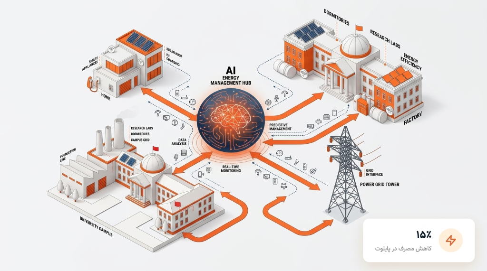
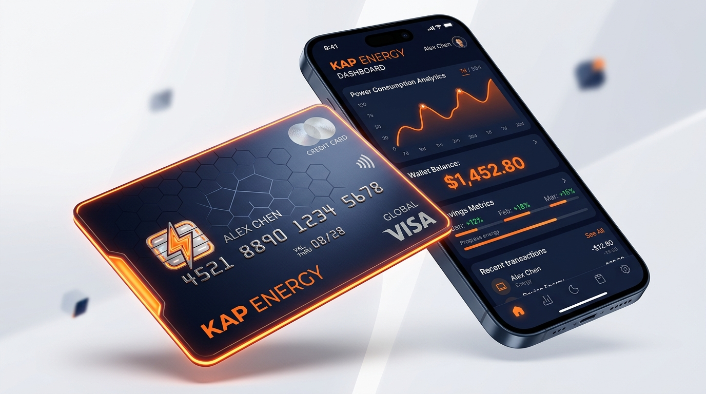
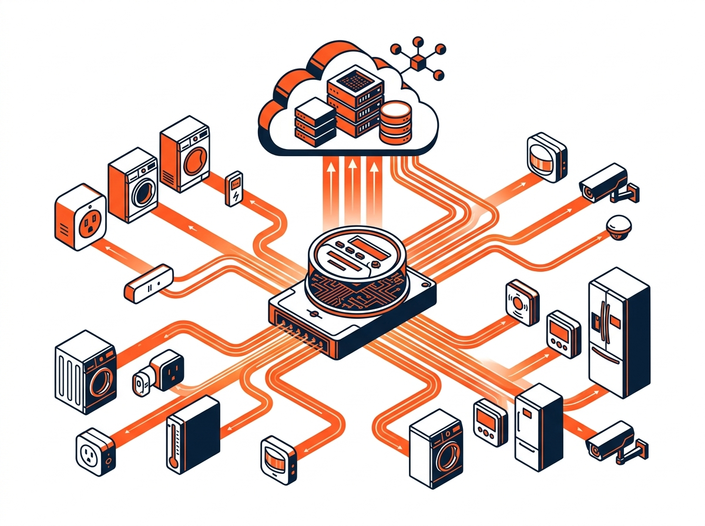
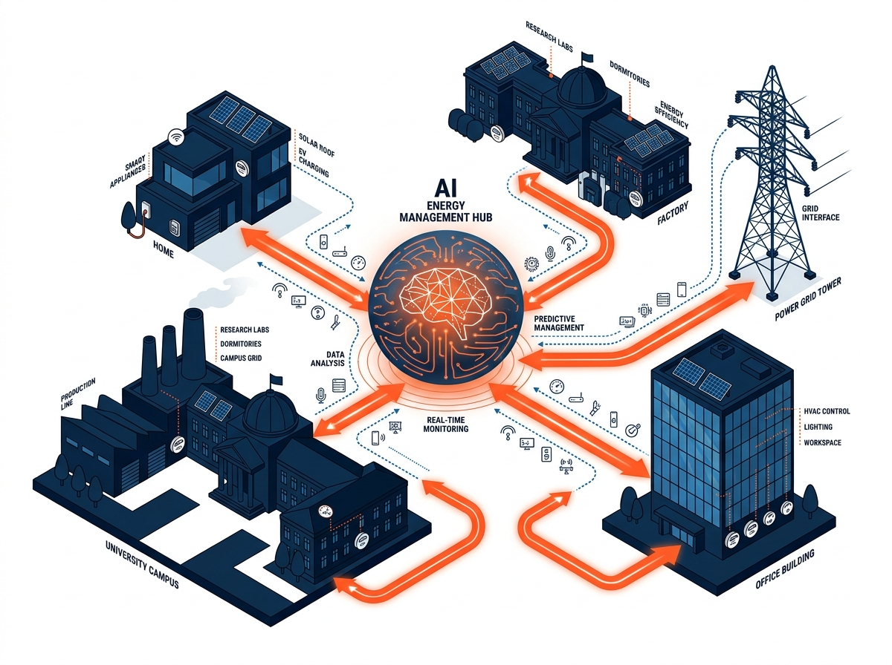

هوش مصنوعی
هوش مصنوعی
نقش الگوریتمهای یادگیری عمیق در تشخیص خطای شبکه توزیع
بررسی عملکرد مدلهای هوش مصنوعی KAP در شناسایی بلادرنگ خطاها با دقت ۹۵ درصد.
بیشتر بخوانیددر دورانی که شریانهای انرژی تحت فشارهای ساختاری و بحرانهای غیرقابل پیشبینی در آستانه فروپاشی قرار دارند، KAP صرفاً یک ابزار تحلیلی نیست، بلکه زیرساختی حیاتی برای بقا و پایداری ملی است. با ترکیب پایش دقیق اینترنت اشیاء در لبه شبکه و الگوریتمهای هوش مصنوعی پیشبینانه، دادههای خام برق را به راهکارهای هوشمند مدیریت بار زمان واقعی تبدیل میکنیم.
از طریق یک مدل استقرار انقلابی و کاملاً رایگان، KAP به میلیونها خانوار و کسبوکار این قدرت را میدهد تا بدون کوچکترین آسیبی به رفاه و امنیت خود، ۱۵ درصد از مصرف برق خود را کنترل کنند. این صرفهجوییهای پنهان، با تبدیل شدن به گواهیهای صرفهجویی انرژی معتبر و قابل معامله، به یک نیروگاه مجازی متمرکز و یکپارچه تبدیل میشوند؛ راهکاری استراتژیک و اقتصادی که کشور را در سختترین شرایط بحران، استوار نگه میدارد.

مصرف خارج از نیاز، الگوهای غیرعادی و فرصتهای قابل مدیریت همیشه از روی قبض مشخص نیستند.
هر خانه، ساختمان یا صنعت محدودیتها و شرایط بهرهبرداری خودش را دارد.
بدون خط مبنا و سنجش نتیجه، نمیتوان فقط از روی کاهش یک عدد درباره اثر اقدام قضاوت کرد.
این دقیقاً هسته ارزشآفرینی پلتفرم است — نه صرف نصب حسگر یا نمایش داشبورد.
پایش مصرف در نقاط موردنظر
شناسایی الگوها و فرصتها
یافتن مصرف قابل اصلاح
پیشنهاد متناسب با شرایط
ارزیابی اثر نسبت به خط مبنا
مدیریت مصرف یک خانه، دانشگاه، کارخانه و شبکه برق نیازهای متفاوتی دارد.
مدیریت سادهتر مصرف با حفظ آسایش
بیشتر بدانید ←شناسایی مصرف قابل اصلاح بدون اختلال در فعالیت آموزشی
بیشتر بدانید ←تصمیمگیری بر اساس مصرف واقعی، ساعات فعالیت و نتیجه اقدامات
بیشتر بدانید ←مدیریت بار با توجه به فرایند، تداوم تولید و محدودیتهای عملیاتی
بیشتر بدانید ←شناخت و سنجش ظرفیت پراکنده مدیریت تقاضا
بیشتر بدانید ←کاپ فراتر از پایش و تحلیل، بستری هوشمند برای تبدیل صرفهجویی تأییدشده به یک دارایی معاملهپذیر فراهم میسازد. از گواهیهای صرفهجویی انرژی تا تجهیزات کنترل هوشمند، همراه با ۵ سال خدمات پس از فروش و پشتیبانی تخصصی.

جدیدترین تحقیقات و تحلیلهای تیم کاپ در حوزه مدیریت هوشمند انرژی
هوش مصنوعی
بررسی عملکرد مدلهای هوش مصنوعی KAP در شناسایی بلادرنگ خطاها با دقت ۹۵ درصد.
بیشتر بخوانید
سختافزارسنسورهای CT طراحیشده با توانایی اندازهگیری بار هر دستگاه بدون نیاز به پلاگین اضافی.
بیشتر بخوانید شبکه هوشمند
شبکه هوشمند
گزارش عملکرد پروژههای اجرایی KAP در بهینهسازی مصرف و کاهش پیک بار.
بیشتر بخوانید
نیروگاه مجازیچگونه تجمیع ظرفیتهای پراکنده مدیریت مصرف میتواند به پایداری شبکه ملی برق کمک کند.
بیشتر بخوانید
سلامت و IoT
چگونه تغییرات غیرعادی در الگوی مصرف برق میتواند نشانهای از تغییر در وضعیت سالمندان باشد.
بیشتر بخوانیدچرا کاهش شدت انرژی حیاتی است و مدیریت مصرف چگونه میتواند به رشد GDP کمک کند.
بیشتر بخوانیدچشمانداز کاپ، پیوند ظرفیتهای پراکنده مدیریت مصرف در نیروگاه مجازی کشور است.